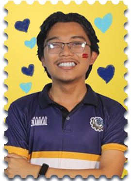
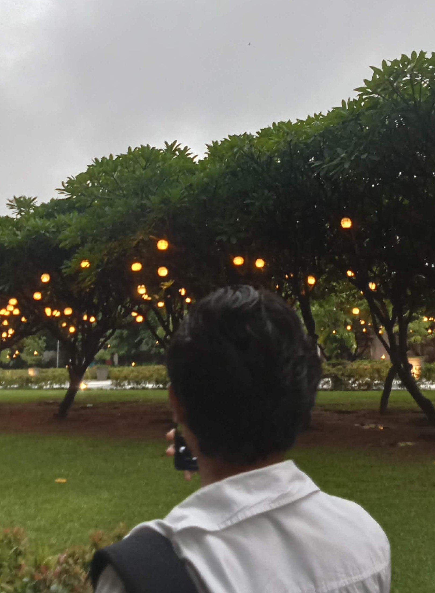
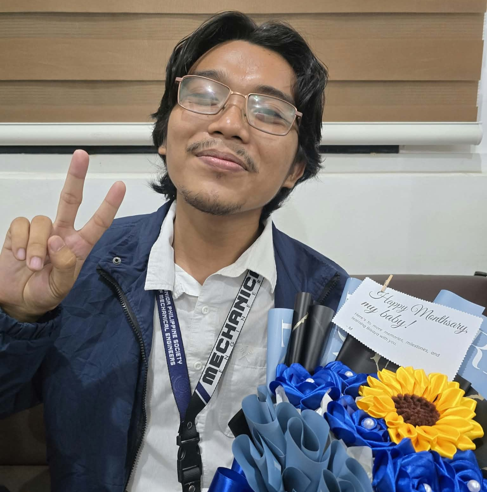
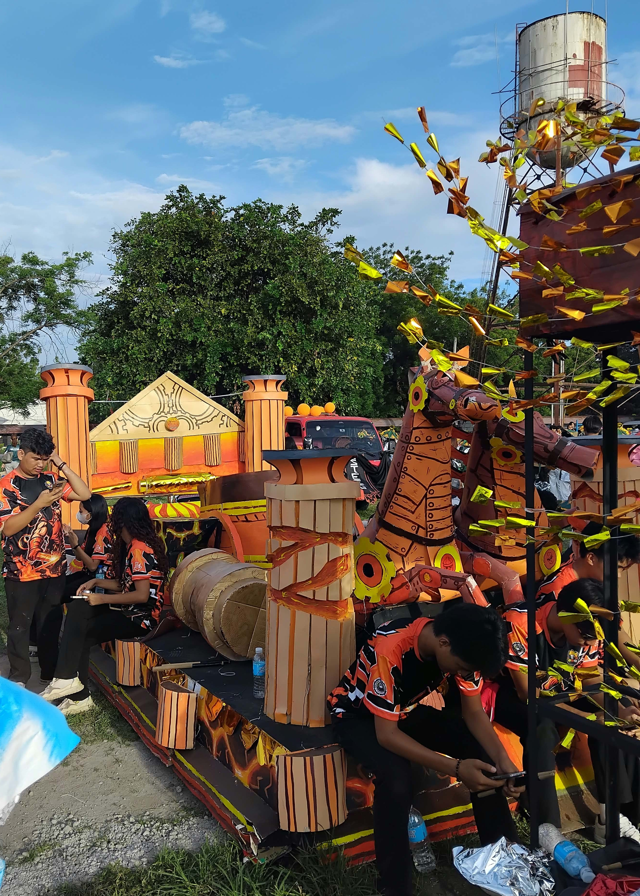
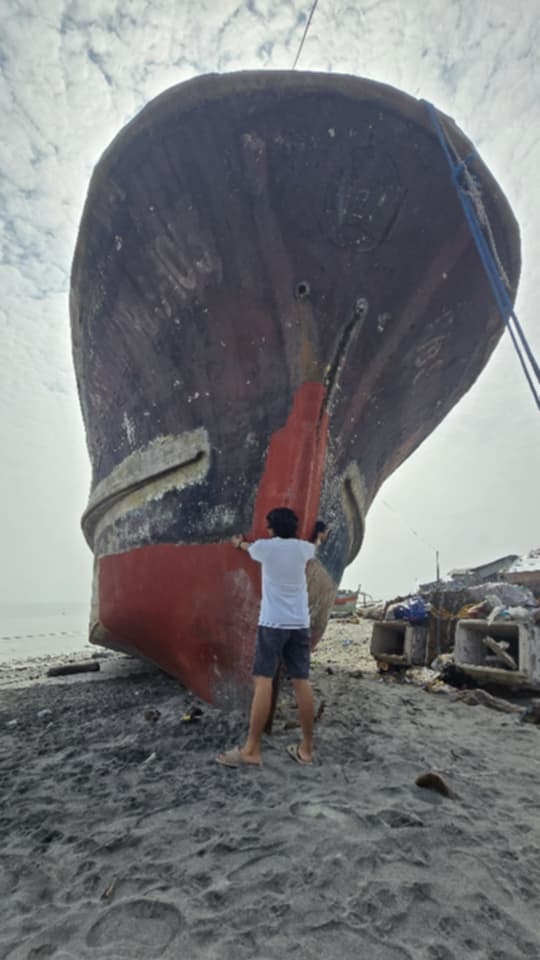
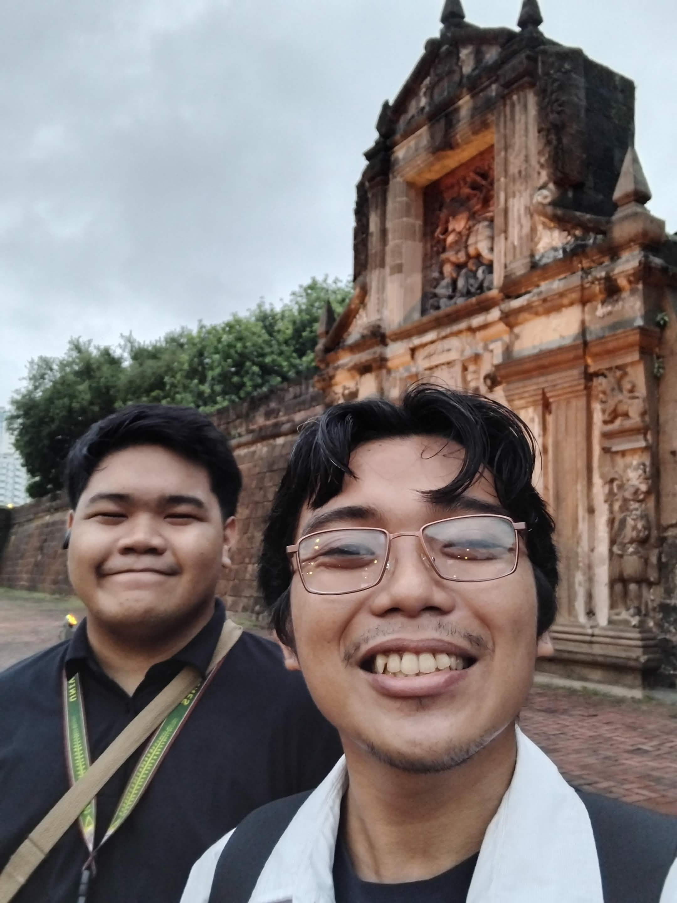
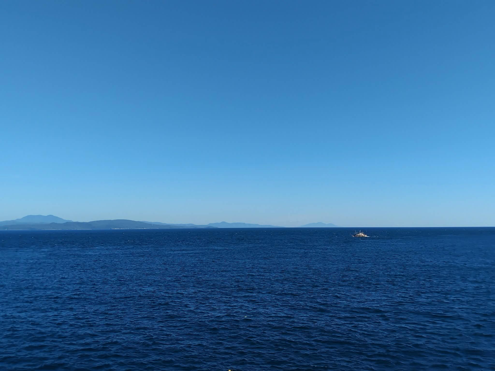

To Otto Von Bestmark Bangcaya Mier,
a.k.a my baby, my uyab, my lalabch, my asawa, my boyfren, my nhay, my anteh, my dear, my sweetheart, my langga, my nong,

Happy 4th monthsary!
Well, technically 4th monthsary of when I first knew you. It's our monthsary, nonetheless. This will be a letter full of thank-yous, my thoughts about you, and just telling more about myself.
I did not expect to be enamored by you this much having come across you online. I basically told everybody nung nakilala kita na may naka-match akong Bisaya or I met someone named after von Bismarck while also being named Marx. I thought that it was funny and maybe hugely coincidental because opposites attract ngani and I hope to stick around for long and for good.

You're just my type. Yes, nafo-fall ako sa mga twink, ugh. Oo nga naman, boyfriend na kita. You're super cute, pretty, and handsome all at same time, my baby. It's so easy to be attracted to men but I haven't felt this good before, being a relationship with somebody who likes me back, appreciates my efforts, and experiencing one I don't feel guilty about. I'm sorry time and time again for being too sensual with you sometimes. I hope that we experience multiple kind of intimacies kahit yung hindi libog — ones na nakikilig tayo sa isa't isa, ones na nagkakatuwaan lang tayo, or ones na hinahayaan lang natin lumipas ang oras nang magkasama.

You're genuinely smart, thoughtful, and kind. I try to listen and understand every concept you tell me even if I struggle sometimes. I love your wit and ability to come up with ideas quickly, I'm amazed by you. You're funny and I get along with you so easily because we're similar in our sense of humor. You're also talented, you have an eye for design and art. Every time you work on something, it always ends up to something cohesive and beautiful. I notice your passion din from what you do, kahit marami kang gawain. I hope you get greatly rewarded with your knowledge and skill. I hope you reach your dreams na makapasok sa PhilSA or in aeronautics or astronomy.

I'm really sorry I can't get to you again so soon. I know you understand my situation sa ganitong panahon, ekonomiya, at paradigm shift sa teknolohiya. I promise I will see you again the soonest as I am able and give back even more to you pag nagkatrabaho na ako kahit sabihan mo pa ako na di ko kailangang gawin. you for being by my side during struggles, the lows and highs. I will be there with yours as well — sa iyong thesis defense, sa graduation mo, sa boards mo, sa job hunting mo rin, and sa magiging problema natin pag makasama kita sa iisang bubong. For now, I want us to get through our current obstacles ang iyong sem at ang aking job hunt.
Sa ikli ng panahon pa lang natin, feel ko sobrang tagal na natin. Despite this, marami pa tayong kailangang maalam, maramdaman at mapagtanto sa isa't isa. Sana hindi ka pa nagsasawa sa akin. Natatakot din ako kung magkaroon man ng panahon where I might fail you. I hope and I promise that won't happen.
Anyway, my dear, ang theme ng site na ito ay ang forget-me-not. A blue and yellow flower, your favorite colors. Una kong naalala from FarmTown, laro sa Facebook hahahaha. Naghanap ako ng flower na naturally blue, di yung pekeng rosas. I tried my best to use the least AI here as best as I can, all of the creative side Side note: my thesis also involved neurocognitive degenaracy, coincidentally. I have a very weird memory span. I feel like I can retain so much information but I can easily forget them, hmm, for school by the least. I tend to not forget very small details about people — their birthdays, their favorite food, their schedules. I'm a person that listens more than I talk, probably coming from how I grew up at home. That's why I think I repress my memories sometimes. Some of my friends say I'm much of a sentimental person, I refer to my feelings of a period of time more than I remember the scenarios. Well, you would be hard to forget, my baby. I hope I get to create more core memories with you that will last within me, in any kind of medium, distance, or magnitude.

(yes, gasgas na)
I wish to express all my feelings and lay out all my plans with you, but then again we'll run out of things to talk about. I like what we have now and I still would pursue you over and over again. I will fight for every chance to not let you go. Hehe, I'm getting ahead of myself. We're only just four months strong. We still have many ways to go. I know we have our long-terms goals but I also want us to deal with what have in front of us rather than digressing too far ahead. I want you to graduate so badly so soon! I want you to prioritize you and your work first before me. As much as possible and in any way I am able, I hope I can also be of help to you rather than being a distraction.
Ayun lang kaya ng brainstems ko to work on a well-written letter. I hope that it is! Rapid fire na lang dahil marami pa akong gustong sabihin!
- (1) Sana makalaro pa kita sa mga laro hindi lang sa League, pero sana makalaro din ako nang mas maayos uli doon,
- (2) Sana may official na call sign na tayo but I really love calling you baby,
- (3) I hope you get to consume the media I recommend you kahit ilan lang sa kanila but I understand we have different tastes,
- (4) Sana mabigyan kita ng handwritten letter in another monthsary, if ever, magpapadala ako diyan sa inyo.

(hehe, yung sinend mo from Gensan)
My baby ko, I love being your boyfriend. No ifs, no despites, no else. Ignorance is a bliss and I love to move forward with you being uncertain of what the future might bring for us.
Thank you once more for staying with me.
Forget me not,
Marx